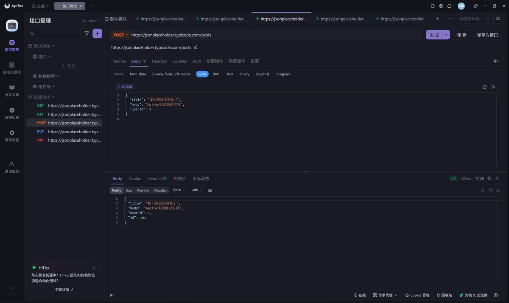
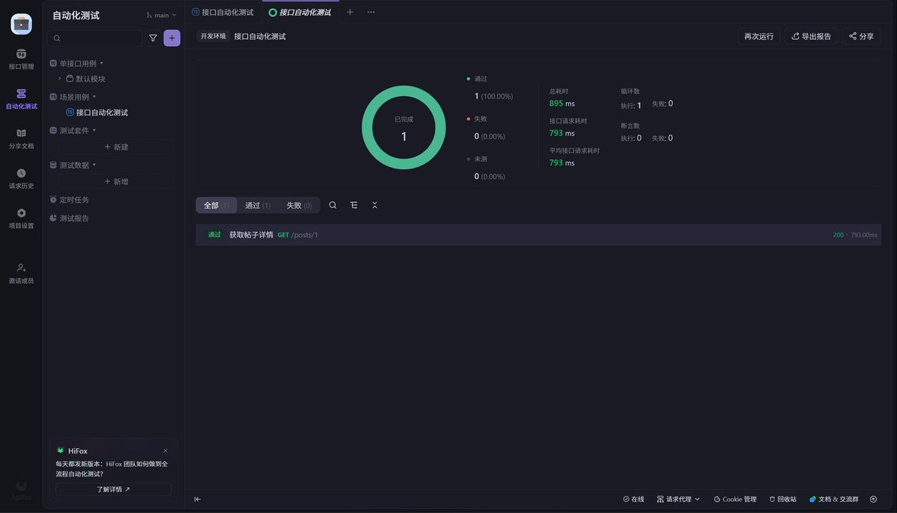
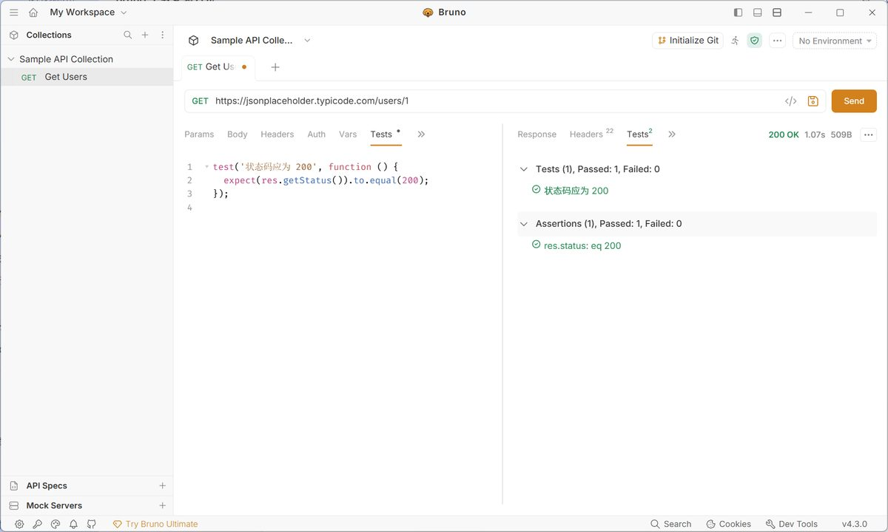

⚡ 在线接口测试台
选择请求方法与接口地址（或用例回放），点击「发送」即向 JSONPlaceholder 发起真实请求，实时返回状态码、耗时与响应体；历史记录保存在本机浏览器。
状态码—
耗时—
响应大小—
// 点击「发送」或选择上方用例，这里会显示真实响应 JSON
历史记录
测试用例
13条
Apifox 8 条 + Bruno 5 条
用例通过率
100%
含 1 条反向用例
接口资源
2类
posts 帖子 / users 用户
断言方式
3种
图形化断言 / 声明式表格 / JS 脚本
Apifox · 8 条用例
项目：jsonplaceholder 接口练习 | 全部在快捷请求中完成，最后一个用例升级为自动化场景
| 用例 | 请求方式与地址 | 操作要点 | 预期与实际结果 | 判定 |
|---|---|---|---|---|
| 1 | GET /posts | Params、Headers、Body 均不填写，直接发送 | 200 OK，返回 100 条帖子的 JSON 数组，每条含 userId、id、title、body | 通过 |
| 2 | GET /posts/1 | 无额外参数，直接发送 | 200 OK，返回 id=1 的单条帖子对象，字段完整 | 通过 |
| 3 | POST /posts | Body 选 JSON，填入新帖标题、内容与 userId | 201 Created，返回带自动生成 id 的 JSON，模拟新增成功 | 通过 |
| 4 | PUT /posts/1 | Body 选 JSON，填入修改后的标题与内容 | 200 OK，返回更新后的帖子数据，模拟整体替换 | 通过 |
| 5 | DELETE /posts/1 | 无 Body，直接发送 | 200 OK，返回空对象 {}，模拟删除成功 | 通过 |
| 6 | GET /posts/1 | 后置操作添加断言：状态码=200、返回 id=1 | 两条断言全部通过，无需人工肉眼对比结果 | 通过 |
| 7 | GET /posts/1 | 对比 Pretty / Raw 展示；控制台查看完整报文 | Pretty 模式自动缩进高亮；控制台可查完整请求头与响应头 | 通过 |
| 8 | 自动化场景 | 保存接口后新建场景，添加步骤并一键运行 | 自动发起请求并执行内置断言，生成自动化测试报告 | 通过 |


需要说明：JSONPlaceholder 是模拟接口，POST / PUT / DELETE 不会真正写入服务器数据，因此用例判定的是“接口语义与响应结构是否正确”，而不是数据持久化结果。
Bruno · 5 条用例
离线优先的桌面工具，集合以本地纯文本 YAML 保存；采用“正常用例 + 反向用例”双线验证断言能力
| 用例 | 请求地址与方法 | 测试点 | 实际结果 | 判定 |
|---|---|---|---|---|
| TC-01 | GET /users/1 | 基本查询与响应读取 | 200 OK，769 ms，509 B，字段与预期一致 | 通过 |
| TC-02 | GET /users/1 + Assert | 不写代码的状态码校验 | Assertions (1) Passed: 1 Failed: 0，绿色 | 通过 |
| TC-03 | GET /users/1 + Tests | JavaScript 脚本校验 | Tests (1) Passed: 1 Failed: 0，与声明式断言分块独立计数 | 通过 |
| TC-04 | GET /users/9999 | 异常（反向）用例 | 404 Not Found，3.15 s，2 B；两区块各 Failed: 1，提示 expected 404 to equal 200 | 通过 |
| TC-05 | GET /posts?userId=2&_limit=3 | Params 参数与 URL 联动 | 200 OK，670 ms，892 B，3 条数据 userId 均为 2 | 通过 |

同一接口的五次耗时观测
单位 ms · 状态码与响应体大小始终不变
由此得到一条断言设计经验：同一接口耗时从 769 ms 波动到 13.06 s，但状态码与响应体大小稳定不变。
断言应针对稳定的功能特征（状态码、字段值、数据条数）编写，不宜设置过短的响应时间阈值，否则网络抖动会造成误报。
同接口工具对比：Apifox 与 Bruno
核心断言能力等价，差异集中在工程化定位
| 对比维度 | Apifox | Bruno |
|---|---|---|
| 安装与登录 | 需注册账号登录，依赖联网 | 离线优先，无需注册登录 |
| 用例组织 | 云端项目 + 接口 + 自动化场景 | 本地纯文本 YAML 集合，Git 友好 |
| 断言方式 | 图形化“后置操作”断言，零代码 | Assert 声明式表格 + Tests 脚本双方式 |
| 异常用例 | 通过状态码断言验证 | TC-04 反向用例验证断言报错能力 |
| 自动化能力 | 内置自动化场景，一键运行出报告 | 无内置场景编排，需 CLI / 外部 CI 配合 |
| 报文可见性 | 控制台查看完整请求/响应报文 | 状态行给出状态码、耗时、响应大小 |
| 适用场景 | 团队协作、接口文档一体化、快速上手 | 个人与脚本化管理、版本控制、离线环境 |
结论：两款工具在接口功能验证这一核心能力上都能胜任，同一接口的正常请求、断言校验与异常判别均准确执行。
差异在于定位——Apifox 走“一体化协作平台”路线，调试、文档、Mock、自动化测试在同一软件内完成，对新手友好；
Bruno 走“轻量本地工具”路线，纯文本存储与离线优先使其天然适合纳入 Git 管理。
实际项目中可按团队规模与协作方式选择，两者也可以并存：Apifox 做协作与文档，Bruno 做脚本化回归资产。